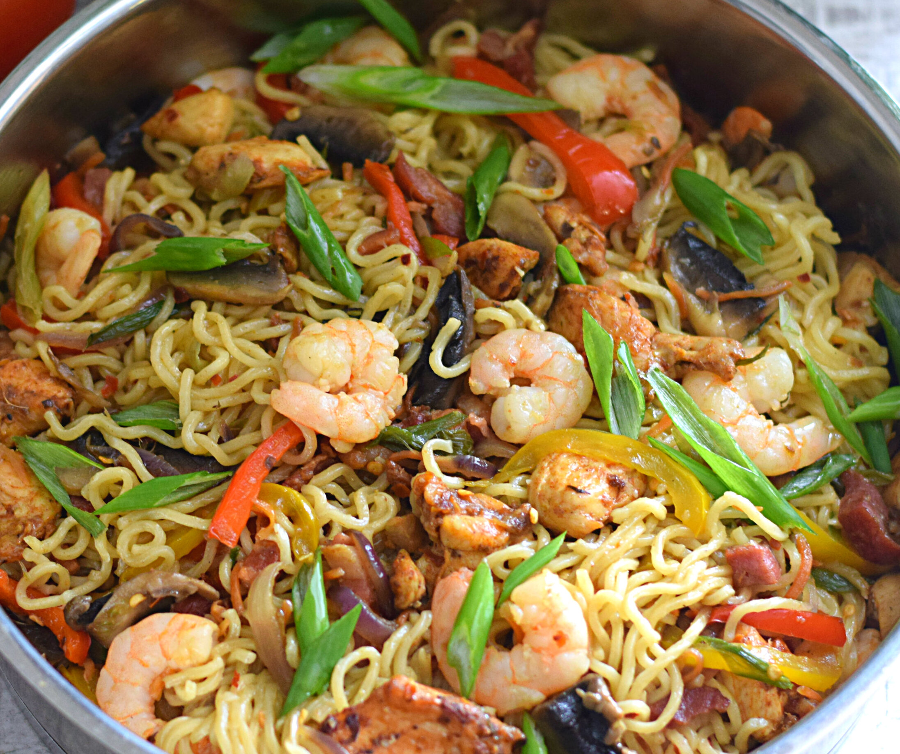

Indomie Noodles

List of Indomie noodles recipe
- A pack of indomie
- Shrimps
- Onions
- Yellow/Red/Green Pepper
- Groundnut Oil
Preparation Steps
- After Chopping your Onions and Pepper into preffered sizes , proceed and pour your oil and fry it all together
for about 3 mins
- After per boiling your Indomie noodles , Add it to the fried shrimps and pepper in step 1 and allow them to stir
fry for 2mins
- Serve as preffered.
Related Cooking Websites
Tips and Variation
- Do not over fry the Noodles while on step 2 in the Preparation Steps
- Use Indomie Ingridents and do not add external cooking spices you have
- Always eat hot food to feel the tates